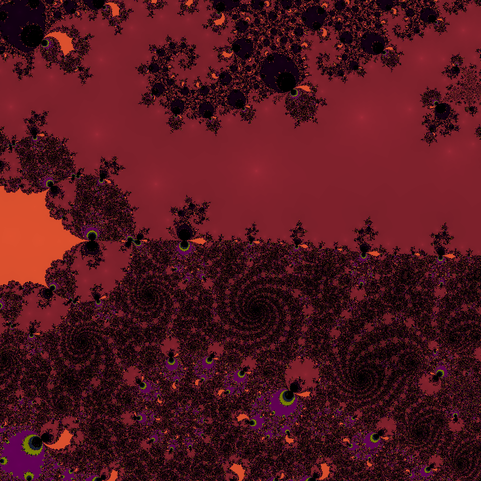
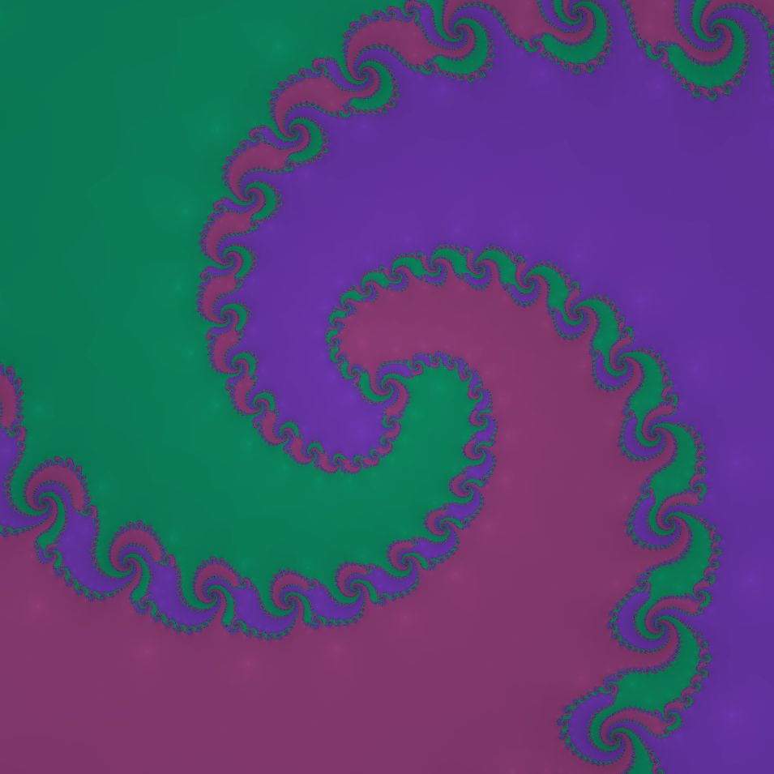
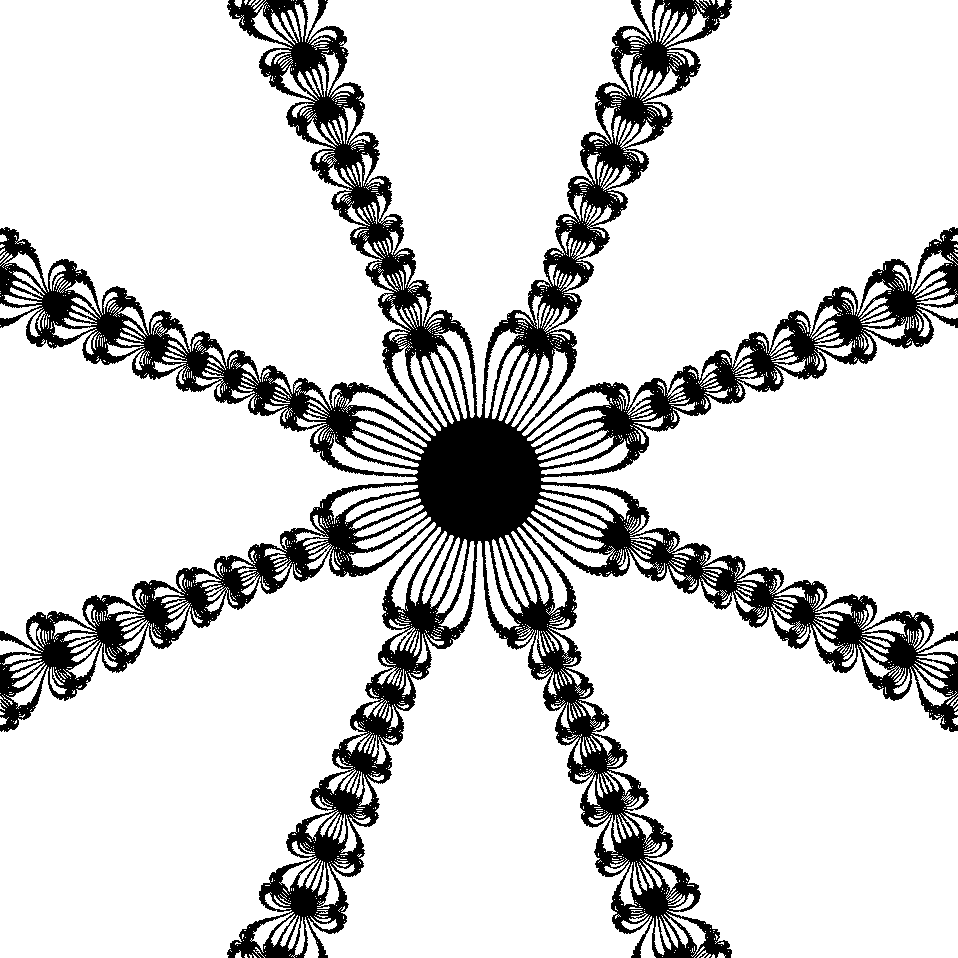

Coding is fun!
Included on here are some personal projects of mine, most of which are currently focused on visualizations of certain mathematical structures. Thanks for taking a look and feel free to explore!
Below are a few images with some of the more exciting to look at fractal patterns generated by the fractal visualizer.
  